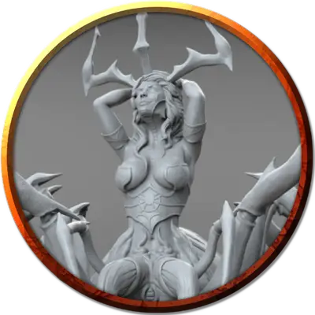

Оживлённая статуя Лолс
Animated Statue of Lolth
Огромный Конструкт, без мировоззрения

Класс Доспеха 17 (природный доспех)
Хиты 230 (20к12 + 100)
Скорость 30 футов
| мод | спас | ||
|---|---|---|---|
| СИЛ | 22 | +6 | +6 |
| ЛОВ | 9 | −1 | −1 |
| ТЕЛ | 20 | +5 | +5 |
| мод | спас | ||
|---|---|---|---|
| ИНТ | 3 | −4 | −4 |
| МДР | 11 | +0 | +0 |
| ХАР | 1 | −5 | −5 |
Иммунитет к урону психическая энергия, яд; дробящий, колющий, рубящий от немагических атак, кроме нанесённых адамантиновым оружием
Иммунитет к состояниям паралич, очарование, отравление, окаменение, истощение, испуг
Чувства тёмное зрение 120 футов, пассивное Восприятие 10
Языки понимает язык Бездны, но не говорит
Опасность 11 (7200 опыта)
Бонус мастерства +4
Особенности
Неизменяемая форма. Статуя обладает иммунитетом ко всем заклинаниям и эффектам, изменяющим его форму.
Сопротивление магии. Статуя совершает с преимуществом спасброски от заклинаний и прочих магических эффектов.
Магическое оружие. Атаки оружием статуи являются магическими.
Паучье лазание. Статуя может лазать по сложным поверхностям, включая потолки, без совершения проверок характеристик.
Действия
Мультиатака. Статуя совершает два размашистых удара.
Размашистый удар. Рукопашная атака оружием: +10 к попаданию, досягаемость 5 футов, одна цель. Попадание: Дробящий урон 19 (3к8 + 6).
Замедление (перезарядка 5–6). Статуя нацеливается на одно или несколько существ, видимых в пределах 10 футов от себя. Все цели должны совершить спасбросок Мудрости Сл 17 от этой магии. При провале цель не может совершать реакции, её скорость уменьшается вдвое, и она не может совершать более одной атаки за свой ход. Кроме того, цель может в свой ход совершать либо действие, либо бонусное действие, но не то и другое. Эти эффекты длятся 1 минуту. Цель может повторять этот спасбросок в конце каждого своего хода, оканчивая эффект на себе при успехе. Цели попавшие под действие Замедления, оказываются запутанными в эфемерных сетях, исчезающих по окончанию эффекта.